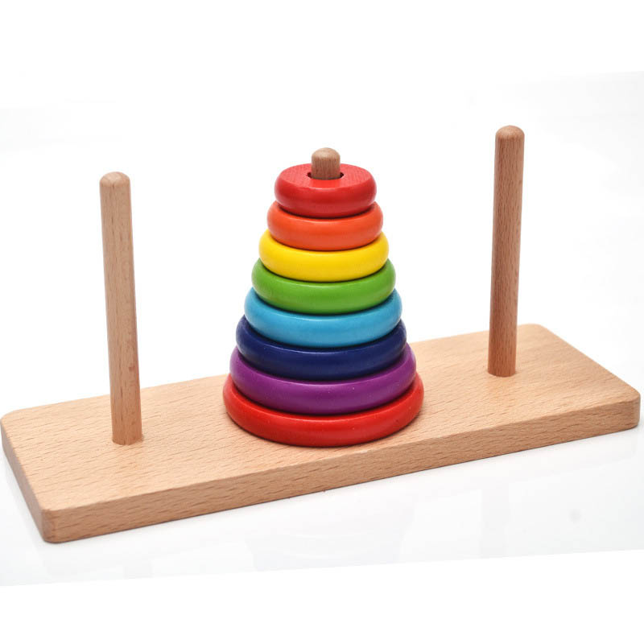
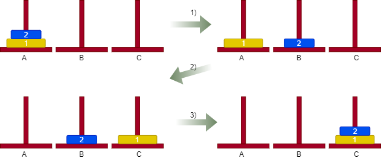
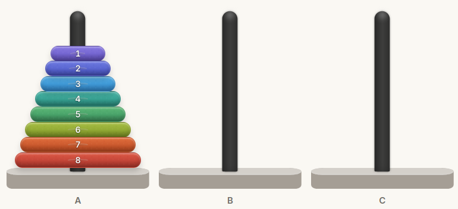
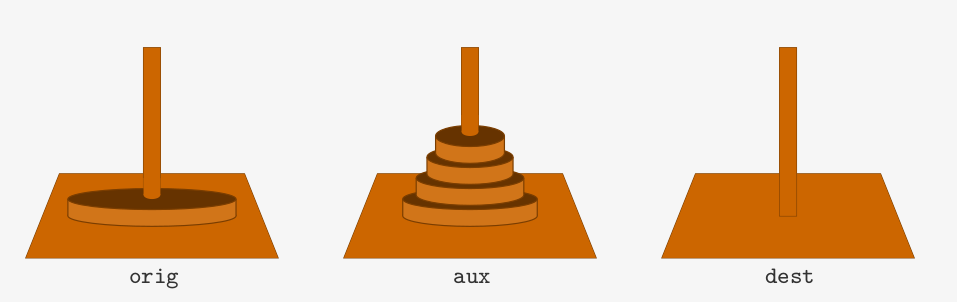
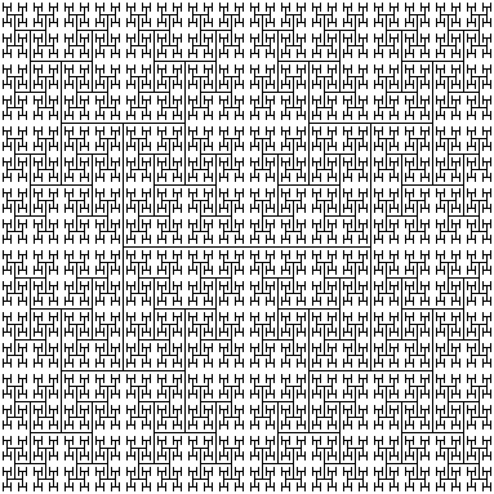
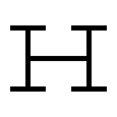
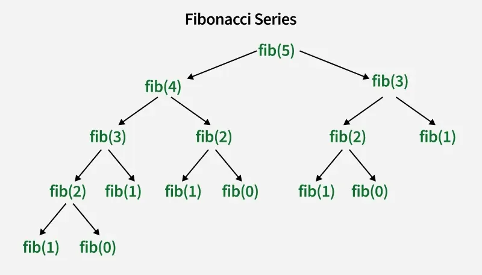

Programação Estruturada
UFABC
2026-10-09
Temos três pinos e uma pilha de discos de tamanhos diferentes.
Objetivo: Mover todos os discos do primeiro para o último pino.

Regras do jogo:
Como mover todos os discos para o último pino?
1 disco: Fácil, só mover o disco.
2 discos: Guardamos primeiro o disco menor em uma torre auxiliar

Como resolvemos o problema para 3 discos?

Como escrever um programa que produza a sequência de movimentos para qualquer número de discos?
Resolver o problema diretamente parece muito difícil
Mas os problemas pequenos eram fáceis
Ideia: Quebrar o problema grande em problemas pequenos
Para mover \(n\) discos de A para C, em algum momento precisamos mover o maior disco até C.
Antes disso, precisamos tirar os outros \(n-1\) discos de cima dele.

Queremos mover \(n\) discos de A para C, usando B como auxiliar.
Mas como movemos os \(n-1\) discos?
Do mesmo jeito.
Uma solução recursiva resolve um problema usando soluções de instâncias menores do mesmo problema.
Em programação, isso normalmente aparece como uma função que chama a si mesma.
Fatorial de um inteiro não-negativo \(n\):
\[ n! = n \cdot (n-1) \cdot (n-2) \cdots 2 \cdot 1. \]
Por exemplo:
\[ 5! = 5\cdot4\cdot3\cdot2\cdot1 = 120. \]
Podemos escrever essa definição usando uma instância menor de fatorial?
\(0! = 1\)
\(n!\) \(= n\,\cdot\) \((n-1)!\) , para \(n>0\).
Suponha que a função fatorial(n - 1) já funciona corretamente.
Como podemos obter fatorial(n)?
Ao escrever a função, podemos confiar no resultado da chamada recursiva.
“Para fazer um procedimento recursivo é preciso ter fé.” – prof. Siang Wun Song
O que acontece com esta função?
Eventualmente falta espaço na pilha de chamadas (stack overflow).
Precisamos de um caso base!
n == 0: caso base;fatorial(n - 1): problema menor.Estamos supondo que a função será chamada com \(n \geq 0\).
Uma solução recursiva precisa de:
Para fatorial(4):
Cada chamada fica esperando a chamada seguinte terminar.
fatorial(4) esperando fatorial(3)
fatorial(3) esperando fatorial(2)
fatorial(2) esperando fatorial(1)
fatorial(1) esperando fatorial(0)
fatorial(0) retorna 1Essas chamadas formam uma pilha de chamadas (call stack).
Cada chamada possui seus próprios parâmetros e variáveis locais.
O que queremos que a seguinte função faça?
A chamada
promete:
Mover
ndiscos de A para C, usando B como pino auxiliar.
Definir precisamente o que a função deve fazer usualmente é a maior parte do trabalho de resolver um problema usando recursão.
Qual é o menor problema que podemos resolver diretamente?
Caso base: n == 0.
Também poderíamos usar n == 1 como caso base. Usar n == 0 deixa o passo recursivo mais uniforme.
Para mover \(n\) discos de origem para destino, primeiro precisamos mover os \(n-1\) menores para o pino auxiliar.
Os \(n-1\) discors menores podem usar os outros dois pinos normalemnte. Logo, movê-los para auxiliar é exatamente um problema de torres de Hanoi com \(n-1\) discos.
Tendo fé que a função funciona para \(n-1\) discos podemos chamar:
Note as escolhas de Origem, Destino, e Auxiliar para essa insância menor:
Origem \(\leftarrow\) origem
Destino \(\leftarrow\) auxiliar
Auxiliar \(\leftarrow\) destino
Agora o maior disco está livre, logo:
Precisamos mover os \(n-1\) discos do pino auxiliar para destino.
Novamente, estamos confiando que a função resolve corretamente o problema menor.
void hanoi(int n, char origem,
char destino, char auxiliar) {
if (n == 0)
return;
hanoi(n - 1, origem, auxiliar, destino);
printf("%c -> %c\n", origem, destino);
hanoi(n - 1, auxiliar, destino, origem);
}O código é quase uma tradução direta da solução que descrevemos.
Diferente do fatorial, cada chamada faz duas chamadas recursivas.
A execução pode ser vista como uma árvore
cada chamada de hanoi gera outras duas chamadas menores
Para mover \(n\) discos:
Se \(T(n)\) é o número de movimentos:
\[ T(n) = 2T(n-1) + 1. \]
Resolvendo a recursão, podemos mostrar que \[ T(n) = 2^n - 1. \]
O número de movimentos cresce exponencialmente.


Cada região é uma cópia menor do mesmo problema.
Essa é exatamente a estrutura que usamos nas Torres de Hanoi.
Suponha que já sabemos desenhar corretamente o fractal no nível nivel - 1.
Para desenhar o nível nivel, precisamos descobrir:
Resolver o problema é, essencialmente, identificar a estrutura recursiva do problema.
A sequência de Fibonacci também possui uma definição recursiva:
\[ F_0 = 0, \qquad F_1 = 1, \]
\[ F_n = F_{n-1} + F_{n-2}. \]

Estamos resolvendo os mesmos subproblemas várias vezes.
Uma solução recursiva pode estar correta e ainda ser muito ineficiente.
Por exemplo, fatorial também pode ser calculado assim:
Para fatorial, a solução iterativa provavelmente é mais simples.
1. Defina precisamente o que a função faz.
O que significa f(n, ...)?
2. Encontre o caso base.
Qual instância sabemos resolver diretamente?
3. Encontre um problema menor.
Se f(n - 1, ...) funciona, como usamos sua resposta?
4. Garanta progresso.
As chamadas realmente chegam ao caso base?
int max(int vec[], n) que retorna o valor máximo de um vetor de tamanho n;imprime_binario(unsigned int n) que imprime em binário um número não-negativo n;P. Feofiloff. Algoritmos em Linguagem C – Recursão.
https://www.ime.usp.br/~pf/algoritmos/aulas/recu.html
F. Olivetti de França. Programação Estruturada – Aula 03: Recursão, UFABC.
https://folivetti.github.io/courses/ProgramacaoEstruturada/PDF/Aula03-Recurs%C3%A3o.pdf
B. W. Kernighan e D. M. Ritchie. The C Programming Language. 2nd ed.